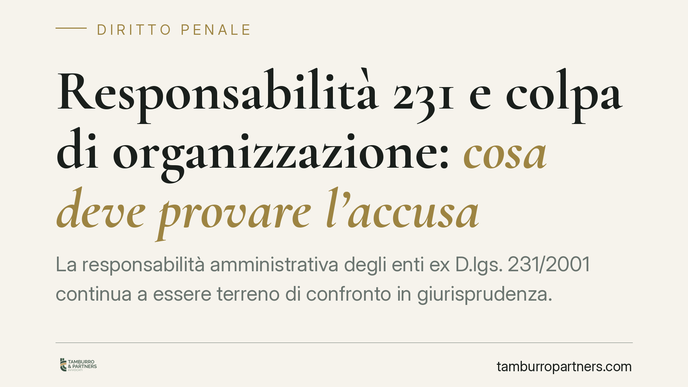

Responsabilità 231 e colpa di organizzazione: cosa deve provare l'accusa
La responsabilità amministrativa degli enti ex D.lgs. 231/2001 continua a essere terreno di confronto in giurisprudenza. Al centro resta la colpa di organizzazione: il deficit del modello che l'accusa deve dimostrare in concreto. Rilevante anche il tema dell'autonomia dell'illecito dell'ente, che può restare punibile anche quando il reato presupposto si prescrive.

Il quadro di riferimento
Il D.lgs. 231/2001 ha introdotto nel nostro ordinamento la responsabilità degli enti per alcuni reati commessi, nel loro interesse o vantaggio, da persone fisiche a essi legate. Non si tratta di responsabilità penale in senso stretto, ma di una responsabilità amministrativa accertata dal giudice penale: una qualificazione dibattuta, con conseguenze concrete sul regime probatorio e sulle garanzie.
La norma distingue due situazioni. L'art. 6 riguarda i reati commessi da soggetti in posizione apicale (amministratori, dirigenti, chi esercita di fatto gestione e controllo). L'art. 7 riguarda invece i soggetti sottoposti all'altrui direzione. La distinzione non è formale: incide sull'onere della prova e sulle condizioni dell'esenzione da responsabilità.
La colpa di organizzazione
Il cuore del sistema è la cosiddetta colpa di organizzazione. L'ente non risponde per il solo fatto che un suo esponente abbia commesso un reato: risponde se quel reato è stato reso possibile da un assetto organizzativo carente, inidoneo a prevenirlo.
Quando il reato è commesso da un apicale (art. 6), l'ente va esente da responsabilità se prova di aver adottato ed efficacemente attuato, prima del fatto, un modello di organizzazione idoneo a prevenire reati della specie di quello verificatosi; di aver affidato la vigilanza a un organismo dotato di autonomi poteri; e che la persona ha eluso fraudolentemente il modello. Qui l'onere grava, in buona sostanza, sull'ente.
Quando il reato è commesso da un sottoposto (art. 7), la responsabilità sussiste se la commissione è stata resa possibile dall'inosservanza degli obblighi di direzione o vigilanza. In questo caso spetta all'accusa dimostrare il deficit organizzativo.
Su questo punto l'orientamento della Cassazione è consolidato: la colpa di organizzazione non si presume. Non basta rilevare che un reato è avvenuto per dedurne, in automatico, l'inadeguatezza del modello. L'accusa deve individuare in concreto la lacuna organizzativa e il nesso tra quella lacuna e la commissione del reato. Un modello esistente sulla carta ma non attuato non protegge; al tempo stesso, l'idoneità va valutata con giudizio ex ante, calandosi nel momento storico in cui il modello operava, non con il senno di poi.
L'autonomia della responsabilità dell'ente
Un profilo spesso sottovalutato riguarda l'autonomia dell'illecito dell'ente rispetto al reato della persona fisica. L'art. 8 del D.lgs. 231/2001 stabilisce che la responsabilità dell'ente sussiste anche quando l'autore del reato non è stato identificato o non è imputabile, e quando il reato si estingue per causa diversa dall'amnistia.
Ne discende una conseguenza pratica rilevante: la prescrizione del reato presupposto non travolge automaticamente la posizione dell'ente. L'illecito amministrativo ha una propria autonomia e un proprio regime, anche quanto alla prescrizione, disciplinata separatamente dall'art. 22 del decreto. In concreto, l'ente può restare chiamato a rispondere anche quando il procedimento a carico della persona fisica si è chiuso per decorso del tempo.
Cosa cambia per l'impresa
Per l'impresa il messaggio è duplice. Da un lato, un modello ben costruito e dimostrabilmente attuato è lo strumento difensivo centrale. Dall'altro, non ci si può affidare all'idea che la prescrizione del reato della persona fisica chiuda ogni rischio: la posizione dell'ente va presidiata in modo autonomo.
Cosa fare in concreto
- Verificate che il modello organizzativo non sia solo formalmente adottato, ma documentabilmente attuato: tracce di formazione, verbali dell'organismo di vigilanza, flussi informativi.
- Aggiornate la mappatura dei rischi dopo ogni modifica organizzativa rilevante, nuova attività o evento critico.
- Conservate la documentazione che prova l'attuazione: in giudizio l'idoneità si valuta sui fatti, non sulle dichiarazioni.
- Impostate, in caso di procedimento, una difesa autonoma dell'ente rispetto a quella delle persone fisiche coinvolte, tenendo conto dell'art. 8.
- È opportuna una revisione periodica del modello, specie dopo riorganizzazioni, operazioni straordinarie o ingresso in nuovi mercati.
---
Contributo informativo a cura di Tamburro & Partners Avvocati. Non costituisce parere legale.
Ogni condominio ha una storia a sé.
Se gestisci un'amministrazione e vuoi un confronto su una specifica questione condominiale, scrivi allo studio. Ti rispondiamo entro un giorno lavorativo.